Imperios Mais Influentes
Império Romano (27 a.C. – 476 d.C.
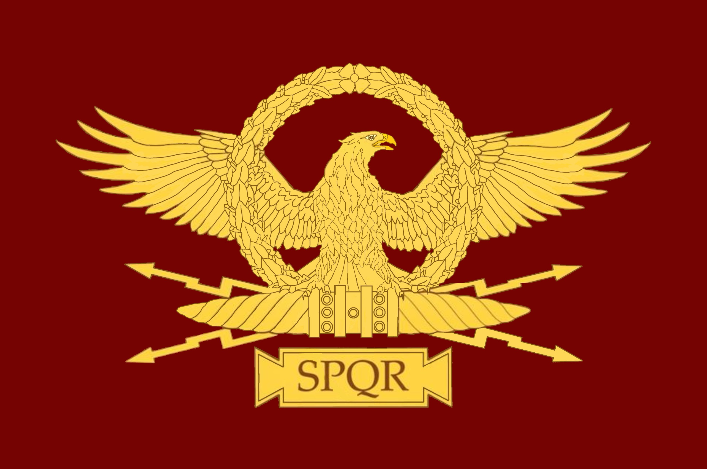
Nascido a partir de uma república na Península Itálica, Roma expandiu-se por toda a bacia do Mediterrâneo, unificando a Europa Ocidental, o Norte da África e o Oriente Médio sob uma única administração civil e militar.
Assista a uma análise detalhada sobre a ascensão dos maiores impérios, incluindo o imenso legado de Roma na história global:
- Pico Territorial: ~5.0 milhões de km².
- Legado Prático: Fundou a base do Direito Civil ocidental (usado no Brasil). O latim deu origem às línguas românicas (português, espanhol, francês, italiano). Suas técnicas de engenharia, como o concreto de longa duração, aquedutos e estradas, moldaram o urbanismo.
- Fator de Influência: Foi o principal responsável pela difusão global do Cristianismo ao adotá-lo como religião oficial no século IV.
.jpg)
Saiba tudo sobre o imperio Romano
Império Britânico (1607 – 1997)
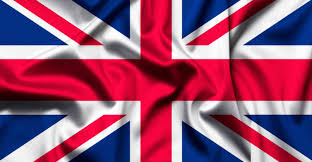
Iniciado como uma potência insular no noroeste da Europa, o Reino Unificado expandiu seu poder ultramarino através da supremacia naval, conectando mercados globais e tornando-se o maior império territorial da história.
Assista a uma análise detalhada sobre a ascensão dos maiores impérios, incluindo o imenso legado da Grã-Bretanha na história global:
- Pico Territorial: ~35.5 milhões de km².
- Legado Prático: Estabeleceu o inglês como o idioma global dos negócios e da ciência. Exportou o sistema jurídico da common law para dezenas de nações e universalizou as regras dos esportes modernos mais populares do planeta, como o futebol.
- Fator de Influência: Foi o principal motor da globalização econômica e o maior financiador da infraestrutura industrial e ferroviária mundial durante o século XIX.
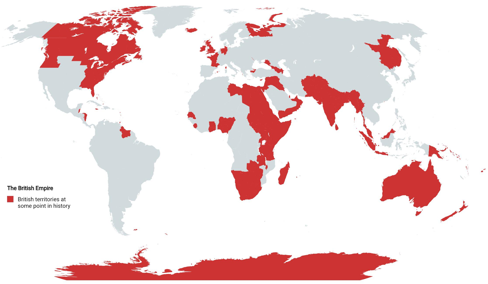
Império Mongol (1206 – 1368)
Nascido a partir da unificação de tribos nômades na Ásia Central, o império expandiu-se com velocidade avassaladora por meio de táticas de cavalaria, formando a maior massa de terra contínua já governada por um único poder.
Assista a uma análise detalhada sobre a ascensão dos maiores impérios, incluindo o imenso legado dos Mongóis na história global:
- Pico Territorial: ~24.0 milhões de km².
- Legado Prático: Criou o Yam, o primeiro sistema postal internacional expresso da história. Instituiu a Paiza, uma placa de metal que funcionou como o primeiro passaporte com proteção oficial para garantir o livre trânsito de mercadores.
- Fator de Influência: Estabeleceu a Pax Mongolica, garantindo a segurança total da Rota da Seda e lançando os fundamentos jurídicos modernos da imunidade diplomática global.
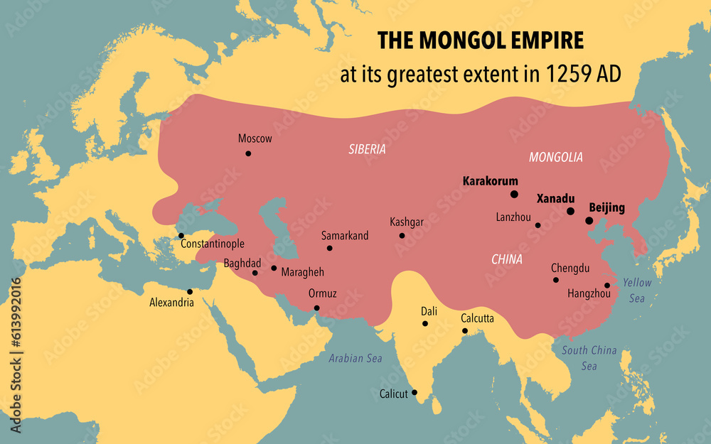
Império Árabe / Califados (632 – 1258)
Surgido na Península Arábica no século VII, expandiu-se rapidamente por meio de conquistas militares e caravanas comerciais, unificando territórios que iam das fronteiras da China até a Península Ibérica sob uma mesma fé.
Assista a uma análise detalhada sobre a ascensão dos maiores impérios, incluindo o imenso legado dos Califados na história global:
- Pico Territorial: ~11.1 milhões de km².
- Legado Prático: Introduziu os algarismos indo-arábicos e o conceito do zero no Ocidente, substituindo a numeração romana. Desenvolveu a álgebra, os algoritmos e escreveu o Cânone da Medicina, que guiou as universidades europeias por séculos.
- Fator de Influência: Salvaguardou e expandiu a filosofia grega clássica durante a Idade Média, consolidando a língua árabe e o Islã como forças culturais dominantes em três continents.
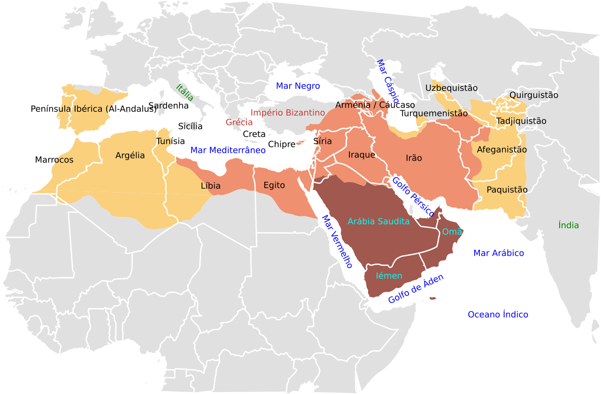
Impérios Chineses / Dinastia Qing (1644 – 1912)
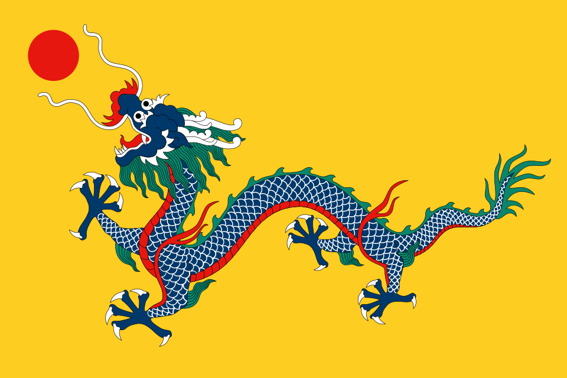
Desenvolvido nas bacias dos rios Amarelo e Azul, o Estado chinês manteve uma continuidade dinástica institucional única na história, projetando sua hegemonia econômica e cultural por toda a Ásia Oriental.
Assista a uma análise detalhada sobre a ascensão dos maiores impérios, incluindo o imenso legado da China na história global:
- Pico Territorial: ~14.7 milhões de km².
- Legado Prático: Inventou a bússola, o papel, a imprensa de tipos móveis e a pólvora, tecnologias que transformaram irreversivelmente a navegação, a guerra e a difusão do conhecimento no planeta.
- Fator de Influência: Pioneiro na criação de uma burocracia estatal meritocrática baseada em exames imperiais (concursos públicos), rompendo com o modelo ocidental de cargos por títulos de nobreza.
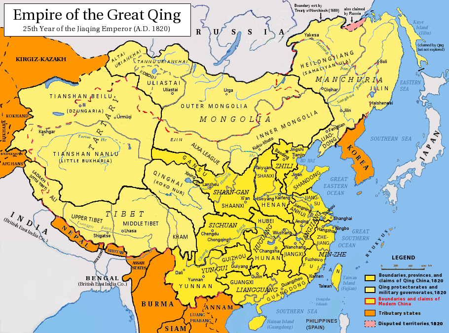
Império Espanhol (1492 – 1976)
.png)
Consolidado após a união dinástica e a Reconquista, a Espanha lançou-se às navegações oceânicas, liderando a exploration das Américas e estabelecendo rotas comerciais estáveis que cruzavam os oceanos Atlântico e Pacífico.
Assista a uma análise detalhada sobre a ascensão dos maiores impérios, incluindo o imenso legado da Espanha na história global:
- Pico Territorial: ~13.7 milhões de km².
- Legado Prático: Transformou o espanhol na segunda língua nativa mais falada do mundo e cunhou o Real de a Ocho, uma moeda de prata que se tornou a primeira divisa de reserva internacional aceita globalmente.
- Fator de Influência: Conduziu o Intercâmbio Colombiano, um tráfego biológico massivo que espalhou cultivos americanos (batata, milho, tomate) e animais europeus (cavalos, gado) por todo o globo.
Império Persa / Aquemênida (550 a.C. – 330 a.C.)
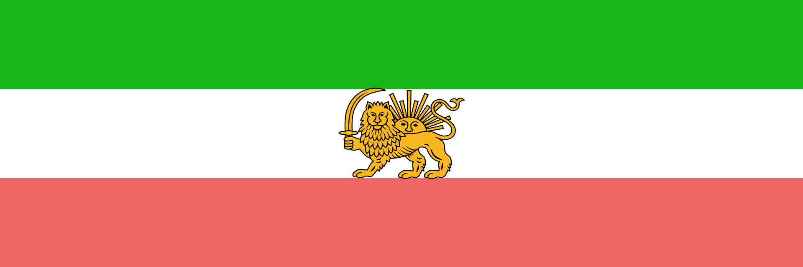
Originado no atual Irã, o império unificou os grandes reinos do Antigo Oriente Médio, do Egito às margens do rio Indo, sob uma estrutura administrativa altamente tolerante com as culturas locais.
Assista a uma análise detalhada sobre a ascensão dos maiores impérios, incluindo o imenso legado da Pérsia na história global:
- Pico Territorial: ~5.5 milhões de km².
- Legado Prático: Construiu a Estrada Real, uma via expressa pavimentada de quase 3.000 km que otimizou o comércio internacional. Dividiu o território em províncias descentralizadas chamadas satrapias, modelo que inspirou o federalismo moderno.
- Fator de Influência: Criou o Cilindro de Ciro, considerado a primeira declaração de direitos humanos da história ao garantir liberdade religiosa e abolir o trabalho escravo dos povos conquistados.
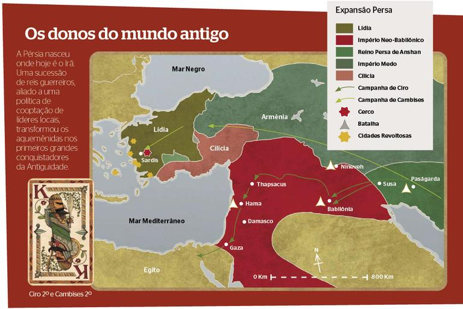
Império Russo (1721 – 1917)
Nascido a partir do Grão-Ducado de Moscou, expandiu-se continuamente por terra em direção ao leste, unificando a Europa Oriental à Ásia Setentrional e absorvendo mais de cem etnias sob a autoridade czarista.
Assista a uma análise detalhada sobre a ascensão dos maiores impérios, incluindo o imenso legado da Rússia na história global:
- Pico Territorial: ~22.8 milhões de km².
- Legado Prático: Construiu a Ferrovia Transiberiana, a maior linha férrea do planeta, integrando o comércio eurasiático. Financiou avanços científicos de escala mundial, como a criação da Tabela Periódica por Dmitri Mendeleiev.
- Fator de Influência: Estabeleceu uma massa geopolítica contínua que dominou 11 fusos horários, exercendo influência cultural e literária profunda através de autores consagrados como Tolstói e Dostoiévski.
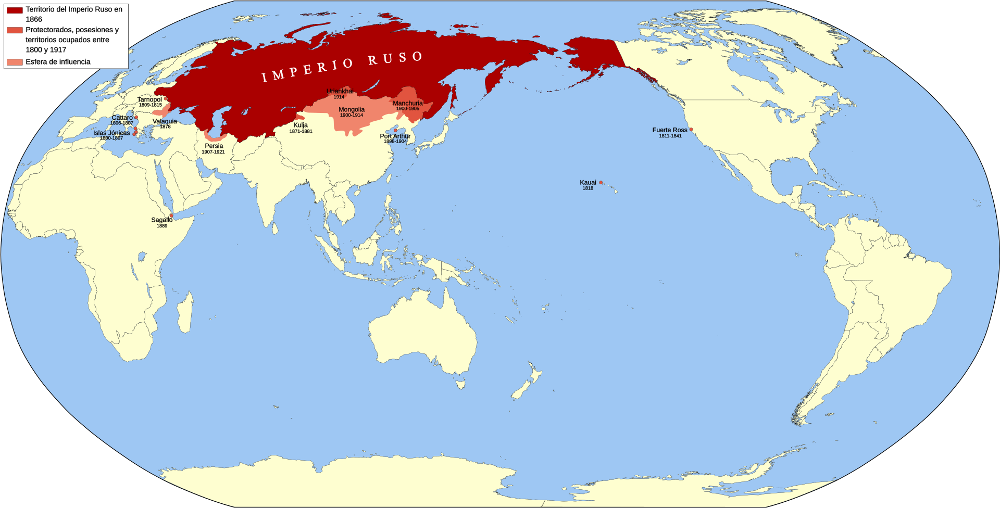
Império Otomano (1299 – 1922)
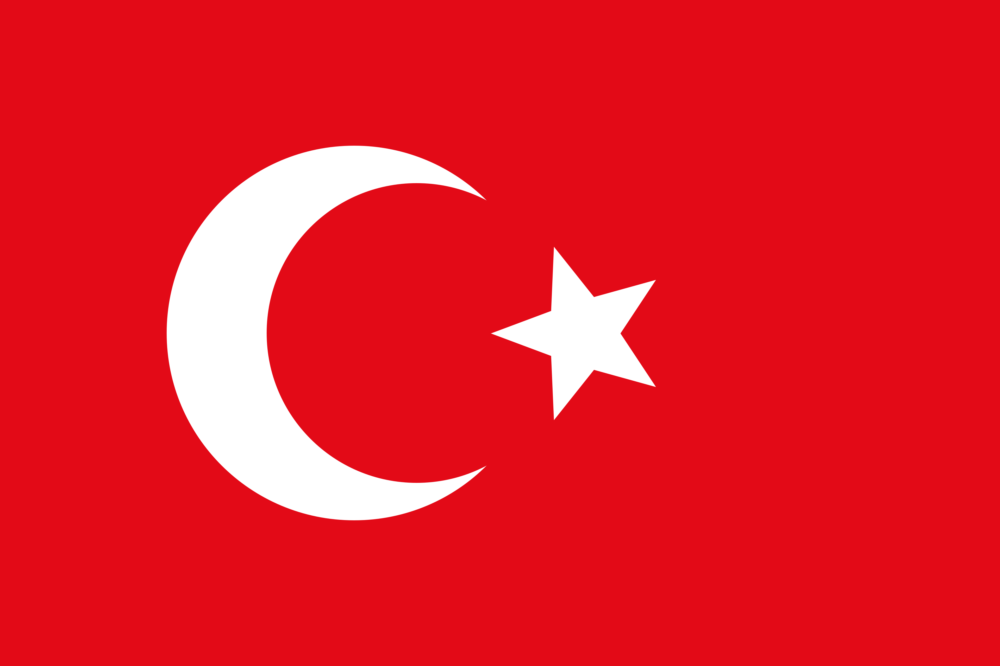
Surgido na Anatólia como um principado turco, expandiu-se pelas franjas do Império Bizantino, conquistando Constantinopla e tornando-se a principal potência islâmica na encruzilhada entre a Europa, a Ásia e a África.
Assista a uma análise detalhada sobre a ascensão dos maiores impérios, incluindo o imenso legado dos Otomanos na história global:
- Pico Territorial: ~5.2 milhões de km².
- Legado Prático: Criou o sistema Millet, que concedia autonomia jurídica e religiosa às minorias cristãs e judaicas dentro de suas fronteiras. Disseminou a cultura dos cafés públicos pela Europa e moldou a arquitetura do Leste Europeu.
- Fator de Influência: Ao bloquear as rotas comerciais terrestres para as Índias em 1453, forçou as potências europeias a buscar rotas marítimas alternativas, precipitando o descobrimento das Américas.
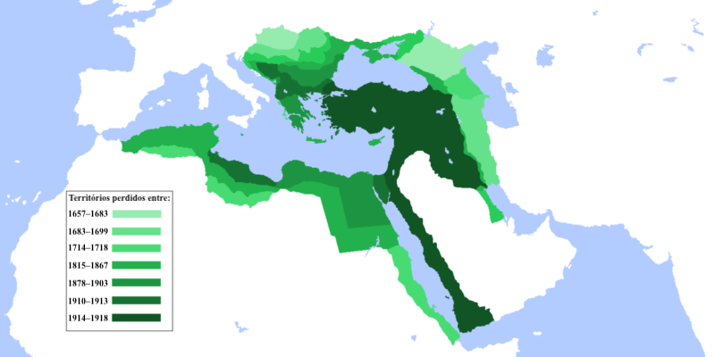
Império Francês (1534 – 1980)
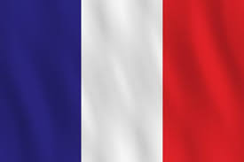
Construído a partir de colônias ultramarinas na América do Norte e Caribe, e expandido na Europa pelas Guerras Napoleônicas, o Estado francês projetou seu poder legal e militar por vastas regiões da África e da Indochina.
Assista a uma análise detalhada sobre a ascensão dos maiores impérios, incluindo o imenso legado da França na história global:
- Pico Territorial: ~11.5 milhões de km².
- LLegado Prático: Criou o Código Napoleônico, o corpo de leis civis que aboliu privilégios feudais de nascimento e serviu de base para as legislações ocidentais modernas. Padronizou o Sistema Métrico Decimal (metro, litro, quilo) mundialmente.
- Fator de Influência: Difundiu globalmente os ideais iluministas e os direitos civis da Revolução Francesa, redesenhando as fronteiras políticas e os modelos administrativos de dezenas de países modernos.
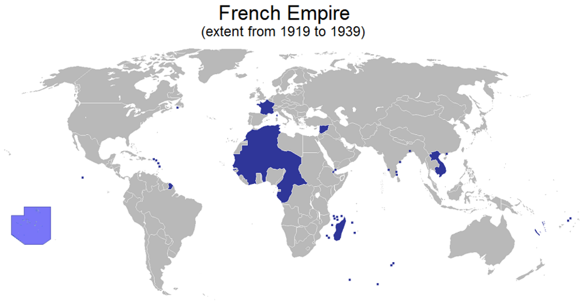